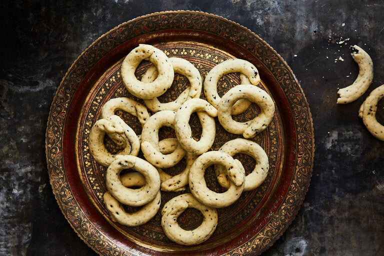

Ka'ak is a very famous and popular street bread sold all over the city of Beirut. It is mostly sold by street vendors on a bicycle where they hang the bread from a pole for easy transportation. The Ka'ak bread is also called the handbag bread or the purse bread because of its shape.
Meal prep time : 3 hours 25 minutes
Servings : 4